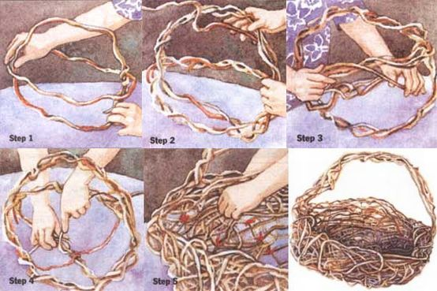

Handworks
Even first-timers can create intricate baskets with the "random-weave" teachnique.
The woods have been one of my favorite places for as long as I can remember, and still I find the wonders of nature fascinating and never ending. While others collect jewelry artifacts and fancy glassware, I am always thrilled to bring home a discarded bird's or hornet's nest or beautiful vines with unusual twists and turns.
My second greatest passion is creating things with my hands. Each time I lay my eyes on a pleasing object, I feel compelled to make it into something-and something better, of course. One lifetime is not nearly enough for me to try everything with which I wish to experiment. For a while, clay was my favorite medium because it provided a legitimate excuse to play, get dirty, and basically make a giant mess. Creating a handsome and presentable object was icing on the cake.
But then I discovered basketry and got hooked after my first creation. As with pottery, you get to play and make a mess while beautiful objects emerge, but you don't have to wait around for the final result-there's no firing in the kiln, no breakage, and no uncertain glazing.
There was just one problem: the more involved in basketry I became, the more dissatisfied I was with the materials that I was purchasing. At first I had to rely on mail-order supplies, which meant I couldn't judge the quality of materials before making a purchase. So I was thrilled when I discovered I could make beautiful baskets from the treasures I found in the woods. Purchased wooden hoops could not compare with the magically twisted vine handles I unearthed in my explorations. My old love, a walk in the woods, was now, happily, a necessity.
One of the easiest ways for beginners to get involved with basketry is to try random weaving-a great, no-fail project. All you need are a bundle of long and flexible vines (I suggest honeysuckle), a pair of sturdy garden clippers, and some twist ties. You can use fresh vines or boil them first to remove the bark. Because you needn't worry about materials shrinking-tight weaving is not characteristic of this style-you can even gather and weave at the same time. The weaving technique consists simply of making a framework and filling in the spaces. For me, it's a quick, fun, and relaxing project to do at the day's end.
Directions for a Random-Weave Market Basket
1 . With one long, continuous piece of vine, form two large hoops at right angles to each other. The use of one vine takes advantage of the natural connection holding the hoops together (see Diagram 1).
2 . Reinforce these hoops with at least two more loose-twisted vines around the original hoops. Keep all vines flowing in the same direction as you twist around the frame (see Diagram 2).
3 . Continue adding new vines, always starting at the rim. Secure these vines by twisting several times in the same direction as the other vines that form the hoop. As you fill in the framework, imagine that there is a watermelon resting in the basket, contained by the weaving. This will help you maintain a sense of the basket's shape (see Diagram 3).
4 . Form the basket bottom with a vine beginning in the center of the horizontal hoop and moving toward the bottom framework of the basket (the lower part of the handle). Wrap around the bottom framework and continue around the other side of the basket to the opposite rim. At this point, and each time you come to the rim, go completely around it-don't just loop over it-to lock the weaver in place and to make the vine lie smoothly along the top of the basket. It is important to do this correctly or the wrapping will pop up and appear loose and poorly woven (see Diagram 4).
5 . Continue weaving randomly from side to side in different directions until the basket shape is defined by at least four to six vines. Use twist ties to temporarily hold vines in place where they cross one another. Don't forget to wrap completely around the rim each and every time you reach it (see Diagram 5).
As you weave remember the invisible watermelon in the center-go around it, not through it. When you have several vines, begin to weave under and over them with the new ones. New weavers no longer need to go from rim to rim, but in any direction required to define the space. Go over vines that are protruding and under those that need pushing out. The under-over weaving locks the vines in place and firms up the shape. The diagram illustrates the fastest way to secure the vines, but not the only way. Remove twist ties when framework is secure.
Continue weaving until the basket is sturdy and filled to your liking. A randomly woven basket can be open and airy or filled in. Again, I want to emphasize that this is no-fail, so enjoy yourself as you weave. I filled in every single hole when I made my first basket. Succeeding ones, however, became more open and free. I usually like to add materials until the basket has a nestlike appearance.
Two Helpful Hints
Start and end all vines on the rim, so the ends can be tucked in.
As the basket develops, the handle often appears too small in proportion to the rest of the basket. If this happens, simply bring another vine up over the handle and weave it in with the others.
A Selection of Fine Pines
If experimenting with different vine baskets seems like an activity you'd like to get more involved in - and I warn you, it can be addicting - you may wish to keep this reference list handy. It'll give you a brief description of several vines, along with tips on both finding them and growing them.
Wisteria, honeysuckle, kudzu, grape, Virginia creeper, and akebia are the vines I use most frequently in my basket making, mainly because they're available to me in the mid-Atlantic region; of course other parts of the country also have interesting vines, just waiting to be tried. Supplejack (Berchemia), which grows in the South, is actually not too supple, but it makes a delightful, contorted framework with a smooth gray-green bark. Bittersweet (Celastrus) has similar characteristics, but its bark is bumpy, gray, and speckled. Be warned that neither supplejack nor bittersweet weave particularly well. Kiwi (Actinidia) is a vine reputed to be a terrific basket material. Finding what fits your needs just takes some experimentation.
Wisteria. If I could have but one basketry plant, it would have to be wisteria. I have yet to find a technique that can't be done with some part of the wisteria vine. The large upper growth-with its wonderful twists and turns formed by its growth around trees and other obstacles-is my favorite for framework. The long ground runners, which are its means of propagation, are the most flexible of the large weavers; half-inch ground runners can be used with no splitting. Even the bark of wisteria is a valued commodity, for although it is thin, it is extremely strong and makes a wonderful wrapping material. When I want to use the vine, however, I don't strip the bark; a stripped wisteria vine is usually hairy and weak. It's perfect as is, as nature intended it.
Wisteria is best harvested when it has escaped into the wild, due to the fact that cultivated plants don't contort as much when they grow. In the center of my neighbor's front yard is a wisteria that is so carefully pruned I wouldn't recognize it if it didn't bloom-no basketry materials there. If a wisteria is growing on a manicured lawn, its runners will most likely have been ruined by the lawn mower.
Honeysuckle. After wisteria, honeysuckle is next on my preference list. It is usually found growing in areas that have been cultivated and then neglected. It also thrives along rows between fields and lanes, and in hedges and bushes. You'll find honeysuckle along the edges of woods, but it needs too much light to grow deep in the woods. Because honeysuckle is known to choke less aggressive plants, many people are more than willing to let you harvest from their property. In fact, they will often call you if they know you want it.
Most basket makers like to strip honeysuckle bark because it spirals on the vine and tends to shed constantly unless removed. Spring is therefore a good time to gather it, as the rising sap makes bark removal easy. If you collect it at other times, however, just boil it to remove the bark. The resulting vine is smooth, hard, light in color, and takes dye well.
If I could have but one basketry plant, it would have to be wisteria. I have yet to find a basket-making technique that can't be done with some part of the wisteria vine.
Kudzu. In the 1930s kudzu was imported from Japan for erosion control in the South. It is what I call a beginner vine because it's so easy to use. Fast growing and strong, kudzu is used in Japan as cattle feed, medicine, food, drink, paper, and fabric. Unfortunately, the extraordinary toughness of kudzu vines causes them to clog the machinery of our mechanized society, and it is thus considered more of a weed than a useful plant here in the United States. It just keeps on growing-covering trees, houses, and whatever else happens to be in its path.
The upper growth is similar in appearance to wisteria, although not as woody or strong. It is fine for framework on a decorative piece but is not as durable as you would expect of a vine of its size. The bark-which is practically rip-proof-varies in thickness with the size of the vine; it can be used as weaves, for wrapping, or even for cordage. My favorite parts, though, are the ground runners, which j ust go on and on. If used whole, they kink, but when split, they are wonderfully flexible. There is none of the breakage or cracking that you get with so many of the other vines.
Grapevine. The first vine everyone thinks of in relation to baskets is usually grapevine. I love its delightful tendrils, which I have just recently started using for free-form miniatures. Grapevines can be wild or cultivated and they tend to be straighter than other vines, thus lending themselves to more traditional shapes. It is most suitable for use as framework. With the exception of muscadine vines, grapevine is not real flexible and makes poor weavers, even in the smaller diameters. Although I love the bark, I almost always boil and strip any grapevine I use. Prone to insects, it is even more susceptible when the bark is left on. The boiling kills any eggs within the vine that could hatch later.
It should be noted that muscadine ( Vitis rotundifolia), which grows in warm climates only, is usable in wickerwork, where there are no sharp bends. Its aerial roots are small (,although quite decorative) and beginners often find the tendrils frustrating to work with because they catch on everything.
Vi rginia creeper. This vine is common throughout much of the United States but is not very strong. It appears to weave best when it's fairly fresh because, once dry, it can never regain its full flexibility. As with kudzu, the long ground runners are the preferred weaves; the tiny tendrils add a lot.
Akebia. A Japanese import, akebia can be used as harvested or with the bark stripped. Boiled, stripped akebia can be dyed, but I prefer to use it natural. A skinny version of kudzu, this vine is excellent for weaving miniature baskets or for starting larger baskets where small weavers work best.
Editor's Note: Doric Messick is a frequent workshop leader at both national and regional basketry conventions. This passage is adapted from Natural Basketry, edited by Maryanne Gillooly, and is available postpaid for $18.90 (published by Storey Communications Inc., Schoolhouse Rd., Pownal, VT 05261).
|
 MANCY MANTHA Hint: As you're weaving, go over vines that are protruding and under those that need pushing out. Also keep in mind that the basket interior should be large enough to hold a watermelon. |
|
|